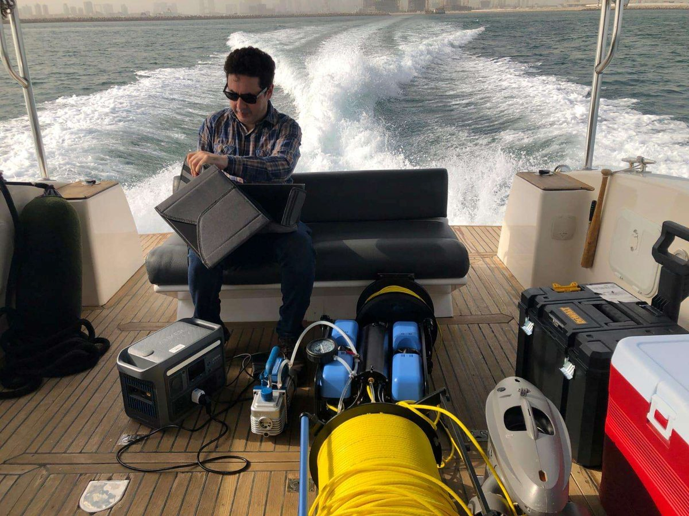
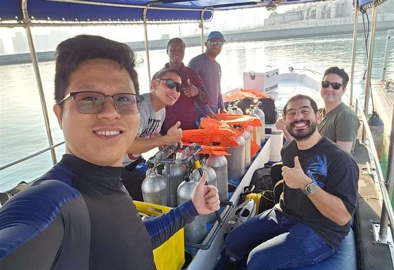
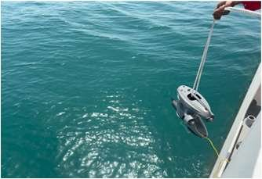
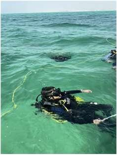
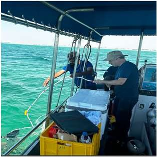

Three-year development roadmap from 2025 to 2028
Key statistics and expected outcomes
Platform design, sensor integration, and core navigation & perception algorithms
System integration, simulations, and incremental field trials
Full system validation, demonstrations, and dissemination activities
7 field visits to 4 sites in UAE waters for platform trials, data collection and transect surveys
Dubai shore
Al Mirfa + Saadiyat
Abu Dhabi shore
Abu Dhabi




